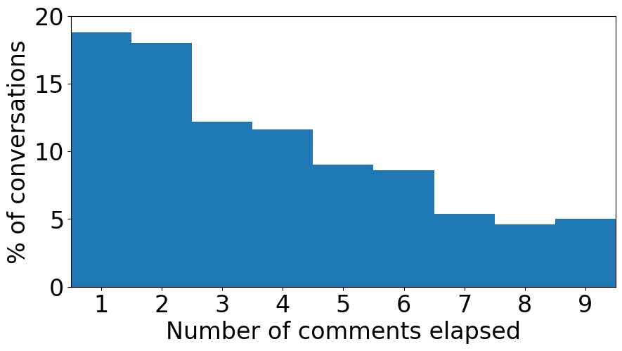

# import necessary libraries, including convokit
import torch
from torch.jit import script, trace
import torch.nn as nn
from torch import optim
import torch.nn.functional as F
import pandas as pd
import numpy as np
import matplotlib.pyplot as plt
import os
import sys
import random
import unicodedata
import itertools
from convokit import download, Corpus
# import all configuration variables
from model.config import *
# import data preprocessing functions
from model.data import *
# import our custom PyTorch modules
from model.model import *
%matplotlib inlineCRAFT fine-tuning and inference interactive demo
This example notebook shows how to fine-tune a pretrained CRAFT conversational model for the task of forecasting conversational derailment, as shown in the “Trouble on the Horizon” paper (note however that due to nondeterminism in the training process, the results will not exactly reproduce the ones shown in the paper; if you need the exact inference results from the paper, see our online demo that does inference only using the saved already-fine-tuned model from the paper).
Also note that this notebook is written primarily for the Wikipedia data. It will still work on the Reddit CMV data as well, but be aware that if seeking to compare results to those in the paper, the actual Reddit CMV evaluation contains some nuances that are not present in the Wikipedia data, as detailed in the CMV version of the online demo.
Part 1: set up data preprocessing utilities
We begin by setting up some helper functions for preprocessing the ConvoKit Utterance data for use with CRAFT.
# Given a ConvoKit conversation, preprocess each utterance's text by tokenizing and truncating.
# Returns the processed dialog entry where text has been replaced with a list of
# tokens, each no longer than MAX_LENGTH - 1 (to leave space for the EOS token)
def processDialog(voc, dialog):
processed = []
for utterance in dialog.iter_utterances():
# skip the section header, which does not contain conversational content
if corpus_name == 'wikiconv' and utterance.meta['is_section_header']:
continue
tokens = tokenize(utterance.text)
# replace out-of-vocabulary tokens
for i in range(len(tokens)):
if tokens[i] not in voc.word2index:
tokens[i] = "UNK"
processed.append({"tokens": tokens, "is_attack": int(utterance.meta[utt_label_metadata]) if utt_label_metadata is not None else 0, "id": utterance.id})
if utt_label_metadata is None:
# if the dataset does not come with utterance-level labels, we assume that (as in the case of CMV)
# the only labels are conversation-level and that the actual toxic comment was not included in the
# data. In that case, we must add a dummy comment containing no actual text, to get CRAFT to run on
# the context preceding the dummy (that is, the full prefix before the removed comment)
processed.append({"tokens": ["UNK"], "is_attack": int(dialog.meta[label_metadata]), "id": processed[-1]["id"] + "_dummyreply"})
return processed
# Load context-reply pairs from the Corpus, optionally filtering to only conversations
# from the specified split (train, val, or test).
# Each conversation, which has N comments (not including the section header) will
# get converted into N-1 comment-reply pairs, one pair for each reply
# (the first comment does not reply to anything).
# Each comment-reply pair is a tuple consisting of the conversational context
# (that is, all comments prior to the reply), the reply itself, the label (that
# is, whether the reply contained a derailment event), and the comment ID of the
# last comment in the context (for later use in re-joining with the ConvoKit corpus).
# The function returns a list of such pairs.
def loadPairs(voc, corpus, split=None, last_only=False):
pairs = []
for convo in corpus.iter_conversations():
# consider only conversations in the specified split of the data
if split is None or convo.meta['split'] == split:
dialog = processDialog(voc, convo)
iter_range = range(1, len(dialog)) if not last_only else [len(dialog)-1]
for idx in iter_range:
reply = dialog[idx]["tokens"][:(MAX_LENGTH-1)]
label = dialog[idx]["is_attack"]
# when re-joining with the corpus we want to store forecasts in
# the last comment of each context (i.e. the comment directly
# preceding the reply), so we must save that comment ID.
comment_id = dialog[idx-1]["id"]
# gather as context up to CONTEXT_SIZE utterances preceding the reply
start = max(idx - CONTEXT_SIZE, 0)
context = [u["tokens"][:(MAX_LENGTH-1)] for u in dialog[start:idx]]
pairs.append((context, reply, label, comment_id))
return pairsPart 2: load the data
Now we load the labeled corpus (Wikiconv or Reddit CMV) from ConvoKit, and run some transformations to prepare it for use with PyTorch
if corpus_name == "wikiconv":
corpus = Corpus(filename=download("conversations-gone-awry-corpus"))
elif corpus_name == "cmv":
corpus = Corpus(filename=download("conversations-gone-awry-cmv-corpus"))Dataset already exists at /reef/convokit_corpora_jpc/conversations-gone-awry-corpus# let's check some quick stats to verify that the corpus loaded correctly
print(len(corpus.get_utterance_ids()))
print(len(corpus.get_speaker_ids()))
print(len(corpus.get_conversation_ids()))30021
8069
4188# Let's also take a look at some example data to see what kinds of information/metadata are available to us
print(list(corpus.iter_conversations())[0].__dict__)
print(list(corpus.iter_utterances())[0]){'obj_type': 'conversation', '_owner': <convokit.model.corpus.Corpus object at 0x7f012173f850>, '_id': '146743638.12652.12652', 'vectors': [], '_meta': ConvoKitMeta({'page_title': 'User talk:2005', 'page_id': 1003212, 'pair_id': '143890867.11926.11926', 'conversation_has_personal_attack': False, 'verified': True, 'pair_verified': True, 'annotation_year': '2018', 'split': 'train'}), '_utterance_ids': ['146743638.12652.12652', '146743638.12667.12652', '146842219.12874.12874', '146860774.13072.13072'], '_speaker_ids': None, 'tree': None}
Utterance(id: '146743638.12652.12652', conversation_id: 146743638.12652.12652, reply-to: None, speaker: Speaker(id: 'Sirex98', vectors: [], meta: ConvoKitMeta({})), timestamp: 1185295934.0, text: '== [WIKI_LINK: WP:COMMONNAME] ==\n', vectors: [], meta: ConvoKitMeta({'is_section_header': True, 'comment_has_personal_attack': False, 'toxicity': 0, 'parsed': [{'rt': 3, 'toks': [{'tok': '=', 'tag': 'NFP', 'dep': 'punct', 'up': 3, 'dn': []}, {'tok': '=', 'tag': 'LS', 'dep': 'punct', 'up': 3, 'dn': []}, {'tok': '[', 'tag': '-LRB-', 'dep': 'punct', 'up': 3, 'dn': []}, {'tok': 'WIKI_LINK', 'tag': 'JJ', 'dep': 'ROOT', 'dn': [0, 1, 2, 4]}, {'tok': ':', 'tag': ':', 'dep': 'punct', 'up': 3, 'dn': []}]}, {'rt': 0, 'toks': [{'tok': 'WP', 'tag': 'NNP', 'dep': 'ROOT', 'dn': [1, 2, 5]}, {'tok': ':', 'tag': ':', 'dep': 'punct', 'up': 0, 'dn': []}, {'tok': 'COMMONNAME', 'tag': 'NNPS', 'dep': 'appos', 'up': 0, 'dn': [3]}, {'tok': ']', 'tag': '-RRB-', 'dep': 'punct', 'up': 2, 'dn': []}, {'tok': '=', 'tag': 'SYM', 'dep': 'punct', 'up': 5, 'dn': []}, {'tok': '=', 'tag': 'SYM', 'dep': 'punct', 'up': 0, 'dn': [4, 6]}, {'tok': '\n', 'tag': '', 'dep': '', 'up': 5, 'dn': []}]}]}))Now we can use the utilities defined in Part 1 to convert the ConvoKit conversational data into a tokenized form that can be straightforwardly turned into Tensors later.
# First, we need to build the vocabulary so that we know how to map tokens to tensor indicies.
# For the sake of replicating the paper results, we will load the pre-computed vocabulary objects used in the paper.
voc = loadPrecomputedVoc(corpus_name, word2index_path, index2word_path)# Inspect the Voc object to make sure it loaded correctly
print(voc.num_words) # expected vocab size is 50004: it was built using a fixed vocab size of 50k plus 4 spots for special tokens PAD, SOS, EOS, and UNK.
print(list(voc.word2index.items())[:10])
print(list(voc.index2word.items())[:10])50004
[('UNK', 3), ('.', 4), ('the', 5), ("'", 6), (',', 7), ('to', 8), ('i', 9), ('of', 10), ('a', 11), ('and', 12)]
[('0', 'PAD'), ('1', 'SOS'), ('2', 'EOS'), ('3', 'UNK'), ('4', '.'), ('5', 'the'), ('6', "'"), ('7', ','), ('8', 'to'), ('9', 'i')]# Convert the test set data into a list of input/label pairs. Each input will represent the conversation as a list of lists of tokens.
train_pairs = loadPairs(voc, corpus, "train", last_only=True)
val_pairs = loadPairs(voc, corpus, "val", last_only=True)
test_pairs = loadPairs(voc, corpus, "test")# Validate the conversion by checking data size and some samples
print(len(train_pairs))
print(len(val_pairs))
print(len(test_pairs))
for p in train_pairs[:5]:
print(p)2508
840
4365
([['i', 'notice', 'that', 'UNK', 'that', 'moved', 'UNK', 'to', 'bill', 'chen', 'citing', 'UNK', ',', 'then', 'you', 'reverted', 'this', 'change', ',', 'bill', 'chen', 'doesn', "'", 't', 'commonly', 'go', 'by', 'william', ',', 'his', 'book', 'is', 'even', 'penned', 'as', 'bill', 'chen', '.', 'from', 'what', 'i', 'read', 'in', 'wp', ':', 'commonname', 'UNK', 'seems', 'to', 'be', 'correct', ',', 'examples', 'given', 'are', 'names', 'such', 'as', ':', '*', 'UNK', '(', 'not', 'UNK', ')', '*', 'UNK', '(', 'not', 'UNK', ')', 'i', 'think', 'this', 'revert', 'may', 'have', 'been', 'a'], ['chen', 'was', 'known', 'in', 'the', 'poker', 'world', 'as', '"', 'william', '"', 'for', 'years', 'before', 'he', 'became', 'commonly', 'known', 'as', '"', 'bill', '"', '.', 'i', 'changed', 'it', 'back', 'because', 'incidences', 'online', 'including', 'usenet', 'are', 'roughly', 'equal', ',', 'nothing', 'at', 'all', 'like', 'bill', 'clinton', 'and', 'william', 'clinton', ',', 'and', 'in', 'equal', 'cases', 'using', 'the', 'real', 'name', 'seems', 'the', 'best', 'choice', '.', '(', 'the', 'UNK', 'page', 'is', 'especially', 'UNK', '.', '.', '.', 'UNK', 'in', 'the', 'page', 'title', ',', 'bill', 'in', 'the', 'page']], ['i', 'see', 'what', 'you', 'saying', 'i', 'just', 'read', 'his', 'UNK', 'profile', ',', 'it', 'struck', 'me', 'when', 'i', 'saw', 'the', 'change', 'because', 'i', 'remember', 'him', 'being', 'called', 'bill', 'when', 'i', 'watched', 'the', 'last', 'season', 'of', 'high', 'stakes', 'poker', ',', 'but', 'you', 'seem', 'to', 'have', 'many', 'more', 'years', 'experience', 'in', 'the', 'poker', '/', 'gambling', 'world', 'then', 'i', 'do', '(', 'i', "'", 'm', 'still', 'a', 'bit', 'of', 'a', 'newbie', ')', ',', 'so', 'i', 'wanted', 'to', 'check', 'with', 'you', 'first', '.', 'btw', 'as'], 0, '146842219.12874.12874')
([['no', 'more', 'than', 'two', 'editors', 'advocated', 'deletion', '.', 'UNK', 'and', 'maybe', 'UNK', '.', 'that', "'", 's', 'not', 'a', 'clear', 'consensus', 'for', 'deletion', '.', 'cheers', ','], ['in', 'the', 'future', 'please', 'don', "'", 't', 'close', 'afds', 'when', 'you', 'don', "'", 't', 'have', 'the', 'courtesy', 'of', 'reading', 'the', 'comments', '.', 'all', 'comments', 'favored', 'deletion', 'except', 'two', '.', 'please', 'don', "'", 't', 'be', 'so', 'careless', 'in', 'the', 'future', '.'], ['that', 'simply', 'isn', "'", 't', 'true', '.', 'if', 'you', 'read', 'the', 'comments', ',', 'you', "'", 'll', 'find', 'it', "'", 's', 'actually', '2', 'keep', ',', '4', 'transwiki', ',', '2', 'delete', '(', 'more', 'or', 'less', ')', '.', 'the', "'", "'", 'comments', "'", "'", 'favour', 'no', 'consensus', '/', 'transwiki', '.', 'the', '"', 'votes', '"', 'favour', 'delete', ',', 'but', 'voting', 'is', 'evil', ',', 'of', 'course', '.', '.', '.'], ['somehow', ',', 'i', 'suspect', 'you', 'may', 'wish', 'to', 'participate', 'in', 'UNK', 'discussion', '.', 'cheers', ',']], ['i', 'assume', 'your', 'deliberate', 'lying', 'has', 'a', 'point', ',', 'but', 'get', 'over', 'it', '.', 'stop', 'bizarrely', 'goin', 'on', 'about', 'UNK', '.', 'that', 'has', 'nothing', 'to', 'do', 'with', 'the', 'afd', '.', 'there', 'was', 'a', 'plain', 'consensus', 'for', 'deleting', 'the', 'article', '.', 'UNK', 'is', 'completely', 'unrelated', '.', 'please', 'don', "'", 't', 'be', 'so', 'deliberately', 'obtuse', 'in', 'the', 'future', '.', 'wasting', 'other', 'people', "'", 's', 'time', 'is', 'simply', 'rude', '.'], 1, '144052463.12169.12169')
([['if', 'you', 'have', 'problems', 'with', 'my', 'edits', 'to', 'the', 'UNK', 'page', 'please', 'let', 'me', 'know', ',', 'do', 'not', 'just', 'revert', 'the', 'edits', '.', 'although', 'the', 'UNK', 'article', 'is', 'very', 'accurate', 'the', 'introduction', 'is', 'riddled', 'with', 'errors', ',', 'which', 'i', 'corrected', '.', 'i', 'think', 'it', 'is', 'everyone', "'", 's', 'best', 'interests', 'to', 'make', 'wiki', 'pages', 'as', 'accurate', 'as', 'possible', 'and', 'the', 'four', 'wheel', 'drive', 'article', 'is', 'not', 'a', 'UNK', 'example', 'of', 'this', '.', 'i', '.', 'e', '.', 'all', '-', 'wheel'], ['*', 'shrug', '*', 'it', '*', 'is', '*', 'just', 'a', 'marketing', 'term', '.', 'i', 'wish', 'you', 'lot', 'would', 'stop', 'editing', 'it', 'otherwise', '.', 'UNK', '.']], ['although', 'UNK', 'can', 'be', 'considered', 'a', 'form', 'of', 'UNK', 'it', 'is', 'not', 'the', 'same', 'drive', 'train', 'type', 'as', 'part', '-', 'time', 'UNK', '.', 'so', 'i', 'would', 'have', 'to', 'say', 'calling', 'it', 'just', 'a', 'marketing', 'term', 'is', 'a', 'narrow', 'minded', 'and', 'inaccurate', 'statement', '.', 'even', 'though', 'they', 'are', 'similar', 'you', 'can', "'", 't', 'just', 'UNK', 'them', 'into', 'the', 'same', 'group', '.', 'if', ',', 'as', 'you', 'say', ',', 'UNK', 'is', 'just', 'a', 'marketing', 'term', 'then', 'taking', 'a', 'turn', 'in', 'a', 'audi'], 0, '127331347.862.862')
([['please', 'stop', 'removing', 'and', 'altering', 'other', 'editors', "'", 'comments', '.', 'what', 'appeared', 'to', 'be', 'valid', 'concern', 'is', 'quickly', 'descending', 'into', 'trolling', ',', 'and', 'if', 'you', 'continue', ',', 'you', 'may', 'be', 'blocked', 'from', 'editing', '.', 'stop', 'it', '.', '-'], ['well', 'please', 'stop', 'posting', 'incorrect', 'information', '.', 'if', 'you', 'were', 'right', 'i', "'", 'd', 'agree', 'with', 'you', ',', 'and', 'i', 'am', 'not', 'trolling', '.'], ['UNK', 'is', 'trolling', ',', 'as', 'is', 'removing', 'other', 'people', "'", 's', 'comments', '.', 'look', ',', 'wikipedia', 'is', 'built', 'on', 'consensus', ',', 'and', 'consensus', 'has', 'it', 'that', 'we', 'use', 'american', 'style', 'for', 'american', 'subjects', '.', 'end', 'of', 'story', '.', 'any', 'more', 'complaint', 'about', 'trolling', 'about', 'this', 'topic', 'and', 'i', "'", 'll', 'report', 'you', 'myself', '.']], ['bullshit', '.', 'i', 'am', 'correcting', 'a', 'simple', 'mistake', '.', 'if', 'i', 'was', 'trolling', 'i', "'", 'd', 'be', 'doing', 'damage', 'to', 'the', 'page', ',', 'yet', 'i', 'am', 'not', '.', 'what', 'was', 'written', 'is', 'wrong', ',', 'simple', 'as', 'that', '.', 'all', 'i', 'have', 'done', 'is', 'disagree', 'with', 'what', 'was', 'written', 'and', 'written', 'as', 'such', '.', 'if', 'that', "'", 's', 'trolling', 'then', 'you', 'are', 'guilty', 'as', 'well', '.', 'and', 'stop', 'UNK', 'my', 'page', 'dickhead', '.', 'UNK', '.'], 1, '144645147.1375.1330')
([['please', 'stop', 'including', 'disreputable', 'sources', 'for', 'this', 'article', '.', 'wikipedia', 'policy', 'is', 'quite', 'clear', 'on', 'this', 'matter', 'blogs', 'and', 'other', 'websites', 'which', 'do', 'not', 'employ', 'editorial', 'oversight', 'of', 'authors', "'", 'work', 'are', 'not', 'permitted', 'as', 'sources', 'here', '.', 'please', 'stop', 'adding', 'blogs', '.'], ['please', 'stop', 'deleting', 'reputable', 'sources', 'from', 'this', 'article', '.', 'you', 'have', 'deleted', 'joe', 'wilson', "'", 's', 'nyt', 'article', 'that', 'is', 'a', 'key', 'factor', 'in', 'this', 'whole', 'controversy', '!', 'among', 'others', '.', 'simply', 'because', 'the', 'article', 'is', 'printed', 'on', 'a', 'different', 'site', 'does', 'not', 'mean', 'it', 'is', 'sourced', 'to', 'a', '"', 'heinous', 'blog', '"', '(', 'which', 'the', 'site', 'is', 'not', 'anyway', ')', '.', 'if', 'you', 'find', 'a', 'better', 'place', 'that', 'the', 'article', 'exists', ',', 'put', 'it', 'there', '.', 'or', 'if'], ['the', 'american', 'prospect', 'article', 'should', 'stay', '-', 'american', 'prospect', 'easily', 'meets', 'UNK', '.', 'the', 'cooperative', 'research', 'project', 'link', 'should', 'be', 'nuked', 'and', 'should', 'stay', 'nuked', '-', 'i', 'see', 'no', 'evidence', 'that', 'it', "'", 's', 'a', 'reliable', 'source', '.', 'factcheck', '.', 'org', 'is', 'reliable', 'enough', 'that', 'the', 'vice', 'president', 'of', 'the', 'united', 'states', '(', 'incorrectly', ')', 'cited', 'it', 'in', 'his', 'debate', 'as', 'an', 'authoritative', 'source', ';', 'they', 'have', 'a', 'good', 'reputation', ',', 'and', 'their', 'very', "'", "'", 'purpose', "'", "'"], ['agreed', 'UNK', 'cooperative', 'research', 'but', 'not', 'the', 'alternet', 'citation', '-', 'they', 'are', 'transcribing', 'an', 'interview', 'on', 'a', 'well', 'known', 'radio', 'show', 'with', 'a', 'well', 'known', 'source', 'with', 'expertise', 'on', 'this', 'topic', 'whose', 'comments', 'are', 'cited', 'in', 'numerous', 'mainstream', 'sources', '.', 'if', 'you', 'have', 'a', 'better', 'source', 'for', 'the', 'transcript', 'that', 'is', 'fine', 'but', 'you', 'cannot', 'just', 'delete', 'it', 'because', 'it', 'is', '"', 'edited', '"', '-', 'unless', 'you', 'have', 'evidence', 'that', 'they', 'are', 'making', 'stuff', 'up', ',', 'we', 'must', 'presume'], ['actually', ',', 'especially', 'with', 'alternet', ',', 'we', "'", "'", 'can', "'", 't', "'", "'", 'assume', 'good', 'faith', ';', 'we', 'need', 'to', 'do', 'exactly', 'the', 'opposite', '.', 'we', 'need', 'to', 'examine', 'sources', 'critically', ',', 'according', 'to', 'the', 'guidelines', 'on', 'UNK', '.', 'were', 'it', 'to', 'be', 'a', 'verbatim', 'copy', ',', 'perhaps', 'we', 'could', 'accept', 'it', 'as', 'a', 'source', '(', "'", "'", 'perhaps', "'", "'", 'being', 'absolutely', 'critical', ')', ',', 'but', 'because', 'it', "'", 's', 'edited', 'and', 'doesn', "'", 't', 'contain', 'information']], ['(', '1', ')', 'please', 'substantiate', 'that', 'the', 'source', 'is', '"', 'notoriously', 'unreliable', '.', '"', '(', '2', ')', 'please', 'indicate', 'where', 'it', 'says', 'we', 'should', 'assume', 'bad', 'faith', 'with', 'sources', 'that', 'are', 'transcripts', 'of', 'interviews', '(', 'i', 'know', 'the', 'quote', 'in', 'the', 'article', 'is', 'directly', 'from', 'the', 'interview', 'as', 'i', 'listened', 'to', 'the', 'interview', 'myself', ';', 'i', 'also', 'have', 'looked', 'at', 'the', 'transcript', 'and', 'do', 'not', 'see', 'anything', 'that', 'is', 'different', 'from', 'what', 'i', 'heard', ';', 'but', 'apparently', 'i', 'should'], 0, '67175218.24895.24895')Part 3: define the inference pipeline
CRAFT inference consists of three steps: (1) using the utterance encoder to produce embeddings of each comment in the context (2) running the comment embeddings through the context encoder to get a final representation of conversational context (3) running the classifier head on the context embedding. To streamline the subsequent code, we encapsulate these three steps in a single PyTorch nn.Module.
class Predictor(nn.Module):
"""This helper module encapsulates the CRAFT pipeline, defining the logic of passing an input through each consecutive sub-module."""
def __init__(self, encoder, context_encoder, classifier):
super(Predictor, self).__init__()
self.encoder = encoder
self.context_encoder = context_encoder
self.classifier = classifier
def forward(self, input_batch, dialog_lengths, dialog_lengths_list, utt_lengths, batch_indices, dialog_indices, batch_size, max_length):
# Forward input through encoder model
_, utt_encoder_hidden = self.encoder(input_batch, utt_lengths)
# Convert utterance encoder final states to batched dialogs for use by context encoder
context_encoder_input = makeContextEncoderInput(utt_encoder_hidden, dialog_lengths_list, batch_size, batch_indices, dialog_indices)
# Forward pass through context encoder
context_encoder_outputs, context_encoder_hidden = self.context_encoder(context_encoder_input, dialog_lengths)
# Forward pass through classifier to get prediction logits
logits = self.classifier(context_encoder_outputs, dialog_lengths)
# Apply sigmoid activation
predictions = F.sigmoid(logits)
return predictionsPart 4: define training loop
Now that we have all the model components defined, we need to define the actual training procedure. This will be a fairly standard neural network training loop, iterating over batches of labeled dialogs and computing cross-entropy loss on the predicted label. We will also define evaluation functions so that we can compute accuracy on the validation set after every epoch, allowing us to keep the model with the best validation performance. Note that for the sake of simpler code, validation accuracy is computed in the “unfair” manner using a single run of CRAFT over the full context preceding the actual personal attack, rather than the more realistic (and complicated) iterated evaluation that is used for final evaluation of the test set (in practice the two metrics track each other fairly well, making this a reasonable simplification for the sake of easy validation).
def train(input_variable, dialog_lengths, dialog_lengths_list, utt_lengths, batch_indices, dialog_indices, labels, # input/output arguments
encoder, context_encoder, attack_clf, # network arguments
encoder_optimizer, context_encoder_optimizer, attack_clf_optimizer, # optimization arguments
batch_size, clip, max_length=MAX_LENGTH): # misc arguments
# Zero gradients
encoder_optimizer.zero_grad()
context_encoder_optimizer.zero_grad()
attack_clf_optimizer.zero_grad()
# Set device options
input_variable = input_variable.to(device)
dialog_lengths = dialog_lengths.to(device)
utt_lengths = utt_lengths.to(device)
labels = labels.to(device)
# Forward pass through utterance encoder
_, utt_encoder_hidden = encoder(input_variable, utt_lengths)
# Convert utterance encoder final states to batched dialogs for use by context encoder
context_encoder_input = makeContextEncoderInput(utt_encoder_hidden, dialog_lengths_list, batch_size, batch_indices, dialog_indices)
# Forward pass through context encoder
context_encoder_outputs, _ = context_encoder(context_encoder_input, dialog_lengths)
# Forward pass through classifier to get prediction logits
logits = attack_clf(context_encoder_outputs, dialog_lengths)
# Calculate loss
loss = F.binary_cross_entropy_with_logits(logits, labels)
# Perform backpropatation
loss.backward()
# Clip gradients: gradients are modified in place
_ = torch.nn.utils.clip_grad_norm_(encoder.parameters(), clip)
_ = torch.nn.utils.clip_grad_norm_(context_encoder.parameters(), clip)
_ = torch.nn.utils.clip_grad_norm_(attack_clf.parameters(), clip)
# Adjust model weights
encoder_optimizer.step()
context_encoder_optimizer.step()
attack_clf_optimizer.step()
return loss.item()
def evaluateBatch(encoder, context_encoder, predictor, voc, input_batch, dialog_lengths,
dialog_lengths_list, utt_lengths, batch_indices, dialog_indices, batch_size, device, max_length=MAX_LENGTH):
# Set device options
input_batch = input_batch.to(device)
dialog_lengths = dialog_lengths.to(device)
utt_lengths = utt_lengths.to(device)
# Predict future attack using predictor
scores = predictor(input_batch, dialog_lengths, dialog_lengths_list, utt_lengths, batch_indices, dialog_indices, batch_size, max_length)
predictions = (scores > 0.5).float()
return predictions, scores
def validate(dataset, encoder, context_encoder, predictor, voc, batch_size, device):
# create a batch iterator for the given data
batch_iterator = batchIterator(voc, dataset, batch_size, shuffle=False)
# find out how many iterations we will need to cover the whole dataset
n_iters = len(dataset) // batch_size + int(len(dataset) % batch_size > 0)
# containers for full prediction results so we can compute accuracy at the end
all_preds = []
all_labels = []
for iteration in range(1, n_iters+1):
batch, batch_dialogs, _, true_batch_size = next(batch_iterator)
# Extract fields from batch
input_variable, dialog_lengths, utt_lengths, batch_indices, dialog_indices, labels, convo_ids, target_variable, mask, max_target_len = batch
dialog_lengths_list = [len(x) for x in batch_dialogs]
# run the model
predictions, scores = evaluateBatch(encoder, context_encoder, predictor, voc, input_variable,
dialog_lengths, dialog_lengths_list, utt_lengths, batch_indices, dialog_indices,
true_batch_size, device)
# aggregate results for computing accuracy at the end
all_preds += [p.item() for p in predictions]
all_labels += [l.item() for l in labels]
print("Iteration: {}; Percent complete: {:.1f}%".format(iteration, iteration / n_iters * 100))
# compute and return the accuracy
return (np.asarray(all_preds) == np.asarray(all_labels)).mean()
def trainIters(voc, pairs, val_pairs, encoder, context_encoder, attack_clf,
encoder_optimizer, context_encoder_optimizer, attack_clf_optimizer, embedding,
n_iteration, batch_size, print_every, validate_every, clip):
# create a batch iterator for training data
batch_iterator = batchIterator(voc, pairs, batch_size)
# Initializations
print('Initializing ...')
start_iteration = 1
print_loss = 0
# Training loop
print("Training...")
# keep track of best validation accuracy - only save when we have a model that beats the current best
best_acc = 0
for iteration in range(start_iteration, n_iteration + 1):
training_batch, training_dialogs, _, true_batch_size = next(batch_iterator)
# Extract fields from batch
input_variable, dialog_lengths, utt_lengths, batch_indices, dialog_indices, labels, _, target_variable, mask, max_target_len = training_batch
dialog_lengths_list = [len(x) for x in training_dialogs]
# Run a training iteration with batch
loss = train(input_variable, dialog_lengths, dialog_lengths_list, utt_lengths, batch_indices, dialog_indices, labels, # input/output arguments
encoder, context_encoder, attack_clf, # network arguments
encoder_optimizer, context_encoder_optimizer, attack_clf_optimizer, # optimization arguments
true_batch_size, clip) # misc arguments
print_loss += loss
# Print progress
if iteration % print_every == 0:
print_loss_avg = print_loss / print_every
print("Iteration: {}; Percent complete: {:.1f}%; Average loss: {:.4f}".format(iteration, iteration / n_iteration * 100, print_loss_avg))
print_loss = 0
# Evaluate on validation set
if (iteration % validate_every == 0):
print("Validating!")
# put the network components into evaluation mode
encoder.eval()
context_encoder.eval()
attack_clf.eval()
predictor = Predictor(encoder, context_encoder, attack_clf)
accuracy = validate(val_pairs, encoder, context_encoder, predictor, voc, batch_size, device)
print("Validation set accuracy: {:.2f}%".format(accuracy * 100))
# keep track of our best model so far
if accuracy > best_acc:
print("Validation accuracy better than current best; saving model...")
best_acc = accuracy
torch.save({
'iteration': iteration,
'en': encoder.state_dict(),
'ctx': context_encoder.state_dict(),
'atk_clf': attack_clf.state_dict(),
'en_opt': encoder_optimizer.state_dict(),
'ctx_opt': context_encoder_optimizer.state_dict(),
'atk_clf_opt': attack_clf_optimizer.state_dict(),
'loss': loss,
'voc_dict': voc.__dict__,
'embedding': embedding.state_dict()
}, os.path.join(save_dir, "finetuned_model.tar"))
# put the network components back into training mode
encoder.train()
context_encoder.train()
attack_clf.train()Part 5: define the evaluation procedure
We’re almost ready to run! The last component we need is some code to evaluate performance on the test set after fine-tuning is completed. This evaluation should use the full iterative procedure described in the paper, replicating how a system might be deployed in practice, without knowledge of where the personal attack occurs
def evaluateDataset(dataset, encoder, context_encoder, predictor, voc, batch_size, device):
# create a batch iterator for the given data
batch_iterator = batchIterator(voc, dataset, batch_size, shuffle=False)
# find out how many iterations we will need to cover the whole dataset
n_iters = len(dataset) // batch_size + int(len(dataset) % batch_size > 0)
output_df = {
"id": [],
"prediction": [],
"score": []
}
for iteration in range(1, n_iters+1):
batch, batch_dialogs, _, true_batch_size = next(batch_iterator)
# Extract fields from batch
input_variable, dialog_lengths, utt_lengths, batch_indices, dialog_indices, labels, convo_ids, target_variable, mask, max_target_len = batch
dialog_lengths_list = [len(x) for x in batch_dialogs]
# run the model
predictions, scores = evaluateBatch(encoder, context_encoder, predictor, voc, input_variable,
dialog_lengths, dialog_lengths_list, utt_lengths, batch_indices, dialog_indices,
true_batch_size, device)
# format the output as a dataframe (which we can later re-join with the corpus)
for i in range(true_batch_size):
convo_id = convo_ids[i]
pred = predictions[i].item()
score = scores[i].item()
output_df["id"].append(convo_id)
output_df["prediction"].append(pred)
output_df["score"].append(score)
print("Iteration: {}; Percent complete: {:.1f}%".format(iteration, iteration / n_iters * 100))
return pd.DataFrame(output_df).set_index("id")Part 6: build and fine-tune the model
We finally have all the components we need! Now we can instantiate the CRAFT model components, load the pre-trained weights, and run fine-tuning.
# Fix random state (affect native Python code only, does not affect PyTorch and hence does not guarantee reproducibility)
random.seed(2019)
# Tell torch to use GPU. Note that if you are running this notebook in a non-GPU environment, you can change 'cuda' to 'cpu' to get the code to run.
device = torch.device('cuda')
print("Loading saved parameters...")
if not os.path.isfile(os.path.join(save_dir, "model.tar")):
raise RuntimeError("Pretrained model not found. Have you run pretraining using train_generative_model.py?")
checkpoint = torch.load(os.path.join(save_dir, "model.tar"))
# If running in a non-GPU environment, you need to tell PyTorch to convert the parameters to CPU tensor format.
# To do so, replace the previous line with the following:
#checkpoint = torch.load("model.tar", map_location=torch.device('cpu'))
encoder_sd = checkpoint['en']
context_sd = checkpoint['ctx']
embedding_sd = checkpoint['embedding']
voc.__dict__ = checkpoint['voc_dict']
print('Building encoders, decoder, and classifier...')
# Initialize word embeddings
embedding = nn.Embedding(voc.num_words, hidden_size)
embedding.load_state_dict(embedding_sd)
# Initialize utterance and context encoders
encoder = EncoderRNN(hidden_size, embedding, encoder_n_layers, dropout)
context_encoder = ContextEncoderRNN(hidden_size, context_encoder_n_layers, dropout)
encoder.load_state_dict(encoder_sd)
context_encoder.load_state_dict(context_sd)
# Initialize classifier
attack_clf = SingleTargetClf(hidden_size, dropout)
# Use appropriate device
encoder = encoder.to(device)
context_encoder = context_encoder.to(device)
attack_clf = attack_clf.to(device)
print('Models built and ready to go!')
# Compute the number of training iterations we will need in order to achieve the number of epochs specified in the settings at the start of the notebook
n_iter_per_epoch = len(train_pairs) // batch_size + int(len(train_pairs) % batch_size == 1)
n_iteration = n_iter_per_epoch * finetune_epochs
# Put dropout layers in train mode
encoder.train()
context_encoder.train()
attack_clf.train()
# Initialize optimizers
print('Building optimizers...')
encoder_optimizer = optim.Adam(encoder.parameters(), lr=labeled_learning_rate)
context_encoder_optimizer = optim.Adam(context_encoder.parameters(), lr=labeled_learning_rate)
attack_clf_optimizer = optim.Adam(attack_clf.parameters(), lr=labeled_learning_rate)
# Run training iterations, validating after every epoch
print("Starting Training!")
print("Will train for {} iterations".format(n_iteration))
trainIters(voc, train_pairs, val_pairs, encoder, context_encoder, attack_clf,
encoder_optimizer, context_encoder_optimizer, attack_clf_optimizer, embedding,
n_iteration, batch_size, print_every, n_iter_per_epoch, clip)Loading saved parameters...
Building encoders, decoder, and classifier...
Models built and ready to go!
Building optimizers...
Starting Training!
Will train for 1170 iterations
Initializing ...
Training...
Iteration: 10; Percent complete: 0.9%; Average loss: 0.6940
Iteration: 20; Percent complete: 1.7%; Average loss: 0.6917
Iteration: 30; Percent complete: 2.6%; Average loss: 0.6923
Validating!
Iteration: 1; Percent complete: 7.1%
Iteration: 2; Percent complete: 14.3%
Iteration: 3; Percent complete: 21.4%
Iteration: 4; Percent complete: 28.6%
Iteration: 5; Percent complete: 35.7%
Iteration: 6; Percent complete: 42.9%
Iteration: 7; Percent complete: 50.0%
Iteration: 8; Percent complete: 57.1%
Iteration: 9; Percent complete: 64.3%
Iteration: 10; Percent complete: 71.4%
Iteration: 11; Percent complete: 78.6%
Iteration: 12; Percent complete: 85.7%
Iteration: 13; Percent complete: 92.9%
Iteration: 14; Percent complete: 100.0%
Validation set accuracy: 50.00%
Validation accuracy better than current best; saving model...
Iteration: 40; Percent complete: 3.4%; Average loss: 0.6950
Iteration: 50; Percent complete: 4.3%; Average loss: 0.6949
Iteration: 60; Percent complete: 5.1%; Average loss: 0.6914
Iteration: 70; Percent complete: 6.0%; Average loss: 0.6924
Validating!
Iteration: 1; Percent complete: 7.1%
Iteration: 2; Percent complete: 14.3%
Iteration: 3; Percent complete: 21.4%
Iteration: 4; Percent complete: 28.6%
Iteration: 5; Percent complete: 35.7%
Iteration: 6; Percent complete: 42.9%
Iteration: 7; Percent complete: 50.0%
Iteration: 8; Percent complete: 57.1%
Iteration: 9; Percent complete: 64.3%
Iteration: 10; Percent complete: 71.4%
Iteration: 11; Percent complete: 78.6%
Iteration: 12; Percent complete: 85.7%
Iteration: 13; Percent complete: 92.9%
Iteration: 14; Percent complete: 100.0%
Validation set accuracy: 50.00%
Iteration: 80; Percent complete: 6.8%; Average loss: 0.6916
Iteration: 90; Percent complete: 7.7%; Average loss: 0.6916
Iteration: 100; Percent complete: 8.5%; Average loss: 0.6922
Iteration: 110; Percent complete: 9.4%; Average loss: 0.6927
Validating!
Iteration: 1; Percent complete: 7.1%
Iteration: 2; Percent complete: 14.3%
Iteration: 3; Percent complete: 21.4%
Iteration: 4; Percent complete: 28.6%
Iteration: 5; Percent complete: 35.7%
Iteration: 6; Percent complete: 42.9%
Iteration: 7; Percent complete: 50.0%
Iteration: 8; Percent complete: 57.1%
Iteration: 9; Percent complete: 64.3%
Iteration: 10; Percent complete: 71.4%
Iteration: 11; Percent complete: 78.6%
Iteration: 12; Percent complete: 85.7%
Iteration: 13; Percent complete: 92.9%
Iteration: 14; Percent complete: 100.0%
Validation set accuracy: 50.00%
Iteration: 120; Percent complete: 10.3%; Average loss: 0.6914
Iteration: 130; Percent complete: 11.1%; Average loss: 0.6915
Iteration: 140; Percent complete: 12.0%; Average loss: 0.6900
Iteration: 150; Percent complete: 12.8%; Average loss: 0.6927
Validating!
Iteration: 1; Percent complete: 7.1%
Iteration: 2; Percent complete: 14.3%
Iteration: 3; Percent complete: 21.4%
Iteration: 4; Percent complete: 28.6%
Iteration: 5; Percent complete: 35.7%
Iteration: 6; Percent complete: 42.9%
Iteration: 7; Percent complete: 50.0%
Iteration: 8; Percent complete: 57.1%
Iteration: 9; Percent complete: 64.3%
Iteration: 10; Percent complete: 71.4%
Iteration: 11; Percent complete: 78.6%
Iteration: 12; Percent complete: 85.7%
Iteration: 13; Percent complete: 92.9%
Iteration: 14; Percent complete: 100.0%
Validation set accuracy: 50.24%
Validation accuracy better than current best; saving model...
Iteration: 160; Percent complete: 13.7%; Average loss: 0.6904
Iteration: 170; Percent complete: 14.5%; Average loss: 0.6900
Iteration: 180; Percent complete: 15.4%; Average loss: 0.6901
Iteration: 190; Percent complete: 16.2%; Average loss: 0.6896
Validating!
Iteration: 1; Percent complete: 7.1%
Iteration: 2; Percent complete: 14.3%
Iteration: 3; Percent complete: 21.4%
Iteration: 4; Percent complete: 28.6%
Iteration: 5; Percent complete: 35.7%
Iteration: 6; Percent complete: 42.9%
Iteration: 7; Percent complete: 50.0%
Iteration: 8; Percent complete: 57.1%
Iteration: 9; Percent complete: 64.3%
Iteration: 10; Percent complete: 71.4%
Iteration: 11; Percent complete: 78.6%
Iteration: 12; Percent complete: 85.7%
Iteration: 13; Percent complete: 92.9%
Iteration: 14; Percent complete: 100.0%
Validation set accuracy: 52.98%
Validation accuracy better than current best; saving model...
Iteration: 200; Percent complete: 17.1%; Average loss: 0.6899
Iteration: 210; Percent complete: 17.9%; Average loss: 0.6887
Iteration: 220; Percent complete: 18.8%; Average loss: 0.6894
Iteration: 230; Percent complete: 19.7%; Average loss: 0.6885
Validating!
Iteration: 1; Percent complete: 7.1%
Iteration: 2; Percent complete: 14.3%
Iteration: 3; Percent complete: 21.4%
Iteration: 4; Percent complete: 28.6%
Iteration: 5; Percent complete: 35.7%
Iteration: 6; Percent complete: 42.9%
Iteration: 7; Percent complete: 50.0%
Iteration: 8; Percent complete: 57.1%
Iteration: 9; Percent complete: 64.3%
Iteration: 10; Percent complete: 71.4%
Iteration: 11; Percent complete: 78.6%
Iteration: 12; Percent complete: 85.7%
Iteration: 13; Percent complete: 92.9%
Iteration: 14; Percent complete: 100.0%
Validation set accuracy: 57.62%
Validation accuracy better than current best; saving model...
Iteration: 240; Percent complete: 20.5%; Average loss: 0.6873
Iteration: 250; Percent complete: 21.4%; Average loss: 0.6869
Iteration: 260; Percent complete: 22.2%; Average loss: 0.6870
Iteration: 270; Percent complete: 23.1%; Average loss: 0.6868
Validating!
Iteration: 1; Percent complete: 7.1%
Iteration: 2; Percent complete: 14.3%
Iteration: 3; Percent complete: 21.4%
Iteration: 4; Percent complete: 28.6%
Iteration: 5; Percent complete: 35.7%
Iteration: 6; Percent complete: 42.9%
Iteration: 7; Percent complete: 50.0%
Iteration: 8; Percent complete: 57.1%
Iteration: 9; Percent complete: 64.3%
Iteration: 10; Percent complete: 71.4%
Iteration: 11; Percent complete: 78.6%
Iteration: 12; Percent complete: 85.7%
Iteration: 13; Percent complete: 92.9%
Iteration: 14; Percent complete: 100.0%
Validation set accuracy: 63.57%
Validation accuracy better than current best; saving model...
Iteration: 280; Percent complete: 23.9%; Average loss: 0.6846
Iteration: 290; Percent complete: 24.8%; Average loss: 0.6853
Iteration: 300; Percent complete: 25.6%; Average loss: 0.6833
Iteration: 310; Percent complete: 26.5%; Average loss: 0.6830
Validating!
Iteration: 1; Percent complete: 7.1%
Iteration: 2; Percent complete: 14.3%
Iteration: 3; Percent complete: 21.4%
Iteration: 4; Percent complete: 28.6%
Iteration: 5; Percent complete: 35.7%
Iteration: 6; Percent complete: 42.9%
Iteration: 7; Percent complete: 50.0%
Iteration: 8; Percent complete: 57.1%
Iteration: 9; Percent complete: 64.3%
Iteration: 10; Percent complete: 71.4%
Iteration: 11; Percent complete: 78.6%
Iteration: 12; Percent complete: 85.7%
Iteration: 13; Percent complete: 92.9%
Iteration: 14; Percent complete: 100.0%
Validation set accuracy: 64.52%
Validation accuracy better than current best; saving model...
Iteration: 320; Percent complete: 27.4%; Average loss: 0.6829
Iteration: 330; Percent complete: 28.2%; Average loss: 0.6812
Iteration: 340; Percent complete: 29.1%; Average loss: 0.6797
Iteration: 350; Percent complete: 29.9%; Average loss: 0.6774
Validating!
Iteration: 1; Percent complete: 7.1%
Iteration: 2; Percent complete: 14.3%
Iteration: 3; Percent complete: 21.4%
Iteration: 4; Percent complete: 28.6%
Iteration: 5; Percent complete: 35.7%
Iteration: 6; Percent complete: 42.9%
Iteration: 7; Percent complete: 50.0%
Iteration: 8; Percent complete: 57.1%
Iteration: 9; Percent complete: 64.3%
Iteration: 10; Percent complete: 71.4%
Iteration: 11; Percent complete: 78.6%
Iteration: 12; Percent complete: 85.7%
Iteration: 13; Percent complete: 92.9%
Iteration: 14; Percent complete: 100.0%
Validation set accuracy: 64.52%
Iteration: 360; Percent complete: 30.8%; Average loss: 0.6789
Iteration: 370; Percent complete: 31.6%; Average loss: 0.6719
Iteration: 380; Percent complete: 32.5%; Average loss: 0.6723
Iteration: 390; Percent complete: 33.3%; Average loss: 0.6691
Validating!
Iteration: 1; Percent complete: 7.1%
Iteration: 2; Percent complete: 14.3%
Iteration: 3; Percent complete: 21.4%
Iteration: 4; Percent complete: 28.6%
Iteration: 5; Percent complete: 35.7%
Iteration: 6; Percent complete: 42.9%
Iteration: 7; Percent complete: 50.0%
Iteration: 8; Percent complete: 57.1%
Iteration: 9; Percent complete: 64.3%
Iteration: 10; Percent complete: 71.4%
Iteration: 11; Percent complete: 78.6%
Iteration: 12; Percent complete: 85.7%
Iteration: 13; Percent complete: 92.9%
Iteration: 14; Percent complete: 100.0%
Validation set accuracy: 64.52%
Iteration: 400; Percent complete: 34.2%; Average loss: 0.6690
Iteration: 410; Percent complete: 35.0%; Average loss: 0.6636
Iteration: 420; Percent complete: 35.9%; Average loss: 0.6552
Validating!
Iteration: 1; Percent complete: 7.1%
Iteration: 2; Percent complete: 14.3%
Iteration: 3; Percent complete: 21.4%
Iteration: 4; Percent complete: 28.6%
Iteration: 5; Percent complete: 35.7%
Iteration: 6; Percent complete: 42.9%
Iteration: 7; Percent complete: 50.0%
Iteration: 8; Percent complete: 57.1%
Iteration: 9; Percent complete: 64.3%
Iteration: 10; Percent complete: 71.4%
Iteration: 11; Percent complete: 78.6%
Iteration: 12; Percent complete: 85.7%
Iteration: 13; Percent complete: 92.9%
Iteration: 14; Percent complete: 100.0%
Validation set accuracy: 64.76%
Validation accuracy better than current best; saving model...
Iteration: 430; Percent complete: 36.8%; Average loss: 0.6493
Iteration: 440; Percent complete: 37.6%; Average loss: 0.6498
Iteration: 450; Percent complete: 38.5%; Average loss: 0.6357
Iteration: 460; Percent complete: 39.3%; Average loss: 0.6412
Validating!
Iteration: 1; Percent complete: 7.1%
Iteration: 2; Percent complete: 14.3%
Iteration: 3; Percent complete: 21.4%
Iteration: 4; Percent complete: 28.6%
Iteration: 5; Percent complete: 35.7%
Iteration: 6; Percent complete: 42.9%
Iteration: 7; Percent complete: 50.0%
Iteration: 8; Percent complete: 57.1%
Iteration: 9; Percent complete: 64.3%
Iteration: 10; Percent complete: 71.4%
Iteration: 11; Percent complete: 78.6%
Iteration: 12; Percent complete: 85.7%
Iteration: 13; Percent complete: 92.9%
Iteration: 14; Percent complete: 100.0%
Validation set accuracy: 64.05%
Iteration: 470; Percent complete: 40.2%; Average loss: 0.6217
Iteration: 480; Percent complete: 41.0%; Average loss: 0.6048
Iteration: 490; Percent complete: 41.9%; Average loss: 0.6094
Iteration: 500; Percent complete: 42.7%; Average loss: 0.5866
Validating!
Iteration: 1; Percent complete: 7.1%
Iteration: 2; Percent complete: 14.3%
Iteration: 3; Percent complete: 21.4%
Iteration: 4; Percent complete: 28.6%
Iteration: 5; Percent complete: 35.7%
Iteration: 6; Percent complete: 42.9%
Iteration: 7; Percent complete: 50.0%
Iteration: 8; Percent complete: 57.1%
Iteration: 9; Percent complete: 64.3%
Iteration: 10; Percent complete: 71.4%
Iteration: 11; Percent complete: 78.6%
Iteration: 12; Percent complete: 85.7%
Iteration: 13; Percent complete: 92.9%
Iteration: 14; Percent complete: 100.0%
Validation set accuracy: 65.00%
Validation accuracy better than current best; saving model...
Iteration: 510; Percent complete: 43.6%; Average loss: 0.5749
Iteration: 520; Percent complete: 44.4%; Average loss: 0.5796
Iteration: 530; Percent complete: 45.3%; Average loss: 0.5569
Iteration: 540; Percent complete: 46.2%; Average loss: 0.5535
Validating!
Iteration: 1; Percent complete: 7.1%
Iteration: 2; Percent complete: 14.3%
Iteration: 3; Percent complete: 21.4%
Iteration: 4; Percent complete: 28.6%
Iteration: 5; Percent complete: 35.7%
Iteration: 6; Percent complete: 42.9%
Iteration: 7; Percent complete: 50.0%
Iteration: 8; Percent complete: 57.1%
Iteration: 9; Percent complete: 64.3%
Iteration: 10; Percent complete: 71.4%
Iteration: 11; Percent complete: 78.6%
Iteration: 12; Percent complete: 85.7%
Iteration: 13; Percent complete: 92.9%
Iteration: 14; Percent complete: 100.0%
Validation set accuracy: 64.88%
Iteration: 550; Percent complete: 47.0%; Average loss: 0.5393
Iteration: 560; Percent complete: 47.9%; Average loss: 0.5558
Iteration: 570; Percent complete: 48.7%; Average loss: 0.5104
Iteration: 580; Percent complete: 49.6%; Average loss: 0.5148
Validating!
Iteration: 1; Percent complete: 7.1%
Iteration: 2; Percent complete: 14.3%
Iteration: 3; Percent complete: 21.4%
Iteration: 4; Percent complete: 28.6%
Iteration: 5; Percent complete: 35.7%
Iteration: 6; Percent complete: 42.9%
Iteration: 7; Percent complete: 50.0%
Iteration: 8; Percent complete: 57.1%
Iteration: 9; Percent complete: 64.3%
Iteration: 10; Percent complete: 71.4%
Iteration: 11; Percent complete: 78.6%
Iteration: 12; Percent complete: 85.7%
Iteration: 13; Percent complete: 92.9%
Iteration: 14; Percent complete: 100.0%
Validation set accuracy: 65.36%
Validation accuracy better than current best; saving model...
Iteration: 590; Percent complete: 50.4%; Average loss: 0.5231
Iteration: 600; Percent complete: 51.3%; Average loss: 0.5161
Iteration: 610; Percent complete: 52.1%; Average loss: 0.4979
Iteration: 620; Percent complete: 53.0%; Average loss: 0.5021
Validating!
Iteration: 1; Percent complete: 7.1%
Iteration: 2; Percent complete: 14.3%
Iteration: 3; Percent complete: 21.4%
Iteration: 4; Percent complete: 28.6%
Iteration: 5; Percent complete: 35.7%
Iteration: 6; Percent complete: 42.9%
Iteration: 7; Percent complete: 50.0%
Iteration: 8; Percent complete: 57.1%
Iteration: 9; Percent complete: 64.3%
Iteration: 10; Percent complete: 71.4%
Iteration: 11; Percent complete: 78.6%
Iteration: 12; Percent complete: 85.7%
Iteration: 13; Percent complete: 92.9%
Iteration: 14; Percent complete: 100.0%
Validation set accuracy: 64.52%
Iteration: 630; Percent complete: 53.8%; Average loss: 0.4687
Iteration: 640; Percent complete: 54.7%; Average loss: 0.4795
Iteration: 650; Percent complete: 55.6%; Average loss: 0.4455
Iteration: 660; Percent complete: 56.4%; Average loss: 0.4693
Validating!
Iteration: 1; Percent complete: 7.1%
Iteration: 2; Percent complete: 14.3%
Iteration: 3; Percent complete: 21.4%
Iteration: 4; Percent complete: 28.6%
Iteration: 5; Percent complete: 35.7%
Iteration: 6; Percent complete: 42.9%
Iteration: 7; Percent complete: 50.0%
Iteration: 8; Percent complete: 57.1%
Iteration: 9; Percent complete: 64.3%
Iteration: 10; Percent complete: 71.4%
Iteration: 11; Percent complete: 78.6%
Iteration: 12; Percent complete: 85.7%
Iteration: 13; Percent complete: 92.9%
Iteration: 14; Percent complete: 100.0%
Validation set accuracy: 64.88%
Iteration: 670; Percent complete: 57.3%; Average loss: 0.4513
Iteration: 680; Percent complete: 58.1%; Average loss: 0.4294
Iteration: 690; Percent complete: 59.0%; Average loss: 0.4058
Iteration: 700; Percent complete: 59.8%; Average loss: 0.4268
Validating!
Iteration: 1; Percent complete: 7.1%
Iteration: 2; Percent complete: 14.3%
Iteration: 3; Percent complete: 21.4%
Iteration: 4; Percent complete: 28.6%
Iteration: 5; Percent complete: 35.7%
Iteration: 6; Percent complete: 42.9%
Iteration: 7; Percent complete: 50.0%
Iteration: 8; Percent complete: 57.1%
Iteration: 9; Percent complete: 64.3%
Iteration: 10; Percent complete: 71.4%
Iteration: 11; Percent complete: 78.6%
Iteration: 12; Percent complete: 85.7%
Iteration: 13; Percent complete: 92.9%
Iteration: 14; Percent complete: 100.0%
Validation set accuracy: 65.00%
Iteration: 710; Percent complete: 60.7%; Average loss: 0.4327
Iteration: 720; Percent complete: 61.5%; Average loss: 0.4177
Iteration: 730; Percent complete: 62.4%; Average loss: 0.3679
Iteration: 740; Percent complete: 63.2%; Average loss: 0.3439
Validating!
Iteration: 1; Percent complete: 7.1%
Iteration: 2; Percent complete: 14.3%
Iteration: 3; Percent complete: 21.4%
Iteration: 4; Percent complete: 28.6%
Iteration: 5; Percent complete: 35.7%
Iteration: 6; Percent complete: 42.9%
Iteration: 7; Percent complete: 50.0%
Iteration: 8; Percent complete: 57.1%
Iteration: 9; Percent complete: 64.3%
Iteration: 10; Percent complete: 71.4%
Iteration: 11; Percent complete: 78.6%
Iteration: 12; Percent complete: 85.7%
Iteration: 13; Percent complete: 92.9%
Iteration: 14; Percent complete: 100.0%
Validation set accuracy: 65.24%
Iteration: 750; Percent complete: 64.1%; Average loss: 0.3971
Iteration: 760; Percent complete: 65.0%; Average loss: 0.4440
Iteration: 770; Percent complete: 65.8%; Average loss: 0.3275
Iteration: 780; Percent complete: 66.7%; Average loss: 0.3662
Validating!
Iteration: 1; Percent complete: 7.1%
Iteration: 2; Percent complete: 14.3%
Iteration: 3; Percent complete: 21.4%
Iteration: 4; Percent complete: 28.6%
Iteration: 5; Percent complete: 35.7%
Iteration: 6; Percent complete: 42.9%
Iteration: 7; Percent complete: 50.0%
Iteration: 8; Percent complete: 57.1%
Iteration: 9; Percent complete: 64.3%
Iteration: 10; Percent complete: 71.4%
Iteration: 11; Percent complete: 78.6%
Iteration: 12; Percent complete: 85.7%
Iteration: 13; Percent complete: 92.9%
Iteration: 14; Percent complete: 100.0%
Validation set accuracy: 65.24%
Iteration: 790; Percent complete: 67.5%; Average loss: 0.3673
Iteration: 800; Percent complete: 68.4%; Average loss: 0.3396
Iteration: 810; Percent complete: 69.2%; Average loss: 0.3182
Validating!
Iteration: 1; Percent complete: 7.1%
Iteration: 2; Percent complete: 14.3%
Iteration: 3; Percent complete: 21.4%
Iteration: 4; Percent complete: 28.6%
Iteration: 5; Percent complete: 35.7%
Iteration: 6; Percent complete: 42.9%
Iteration: 7; Percent complete: 50.0%
Iteration: 8; Percent complete: 57.1%
Iteration: 9; Percent complete: 64.3%
Iteration: 10; Percent complete: 71.4%
Iteration: 11; Percent complete: 78.6%
Iteration: 12; Percent complete: 85.7%
Iteration: 13; Percent complete: 92.9%
Iteration: 14; Percent complete: 100.0%
Validation set accuracy: 65.12%
Iteration: 820; Percent complete: 70.1%; Average loss: 0.3284
Iteration: 830; Percent complete: 70.9%; Average loss: 0.3271
Iteration: 840; Percent complete: 71.8%; Average loss: 0.2953
Iteration: 850; Percent complete: 72.6%; Average loss: 0.2902
Validating!
Iteration: 1; Percent complete: 7.1%
Iteration: 2; Percent complete: 14.3%
Iteration: 3; Percent complete: 21.4%
Iteration: 4; Percent complete: 28.6%
Iteration: 5; Percent complete: 35.7%
Iteration: 6; Percent complete: 42.9%
Iteration: 7; Percent complete: 50.0%
Iteration: 8; Percent complete: 57.1%
Iteration: 9; Percent complete: 64.3%
Iteration: 10; Percent complete: 71.4%
Iteration: 11; Percent complete: 78.6%
Iteration: 12; Percent complete: 85.7%
Iteration: 13; Percent complete: 92.9%
Iteration: 14; Percent complete: 100.0%
Validation set accuracy: 64.52%
Iteration: 860; Percent complete: 73.5%; Average loss: 0.2794
Iteration: 870; Percent complete: 74.4%; Average loss: 0.2758
Iteration: 880; Percent complete: 75.2%; Average loss: 0.2719
Iteration: 890; Percent complete: 76.1%; Average loss: 0.2297
Validating!
Iteration: 1; Percent complete: 7.1%
Iteration: 2; Percent complete: 14.3%
Iteration: 3; Percent complete: 21.4%
Iteration: 4; Percent complete: 28.6%
Iteration: 5; Percent complete: 35.7%
Iteration: 6; Percent complete: 42.9%
Iteration: 7; Percent complete: 50.0%
Iteration: 8; Percent complete: 57.1%
Iteration: 9; Percent complete: 64.3%
Iteration: 10; Percent complete: 71.4%
Iteration: 11; Percent complete: 78.6%
Iteration: 12; Percent complete: 85.7%
Iteration: 13; Percent complete: 92.9%
Iteration: 14; Percent complete: 100.0%
Validation set accuracy: 65.24%
Iteration: 900; Percent complete: 76.9%; Average loss: 0.2609
Iteration: 910; Percent complete: 77.8%; Average loss: 0.2521
Iteration: 920; Percent complete: 78.6%; Average loss: 0.2928
Iteration: 930; Percent complete: 79.5%; Average loss: 0.2262
Validating!
Iteration: 1; Percent complete: 7.1%
Iteration: 2; Percent complete: 14.3%
Iteration: 3; Percent complete: 21.4%
Iteration: 4; Percent complete: 28.6%
Iteration: 5; Percent complete: 35.7%
Iteration: 6; Percent complete: 42.9%
Iteration: 7; Percent complete: 50.0%
Iteration: 8; Percent complete: 57.1%
Iteration: 9; Percent complete: 64.3%
Iteration: 10; Percent complete: 71.4%
Iteration: 11; Percent complete: 78.6%
Iteration: 12; Percent complete: 85.7%
Iteration: 13; Percent complete: 92.9%
Iteration: 14; Percent complete: 100.0%
Validation set accuracy: 64.88%
Iteration: 940; Percent complete: 80.3%; Average loss: 0.1897
Iteration: 950; Percent complete: 81.2%; Average loss: 0.2195
Iteration: 960; Percent complete: 82.1%; Average loss: 0.2299
Iteration: 970; Percent complete: 82.9%; Average loss: 0.2102
Validating!
Iteration: 1; Percent complete: 7.1%
Iteration: 2; Percent complete: 14.3%
Iteration: 3; Percent complete: 21.4%
Iteration: 4; Percent complete: 28.6%
Iteration: 5; Percent complete: 35.7%
Iteration: 6; Percent complete: 42.9%
Iteration: 7; Percent complete: 50.0%
Iteration: 8; Percent complete: 57.1%
Iteration: 9; Percent complete: 64.3%
Iteration: 10; Percent complete: 71.4%
Iteration: 11; Percent complete: 78.6%
Iteration: 12; Percent complete: 85.7%
Iteration: 13; Percent complete: 92.9%
Iteration: 14; Percent complete: 100.0%
Validation set accuracy: 65.24%
Iteration: 980; Percent complete: 83.8%; Average loss: 0.1860
Iteration: 990; Percent complete: 84.6%; Average loss: 0.1716
Iteration: 1000; Percent complete: 85.5%; Average loss: 0.1843
Iteration: 1010; Percent complete: 86.3%; Average loss: 0.1666
Validating!
Iteration: 1; Percent complete: 7.1%
Iteration: 2; Percent complete: 14.3%
Iteration: 3; Percent complete: 21.4%
Iteration: 4; Percent complete: 28.6%
Iteration: 5; Percent complete: 35.7%
Iteration: 6; Percent complete: 42.9%
Iteration: 7; Percent complete: 50.0%
Iteration: 8; Percent complete: 57.1%
Iteration: 9; Percent complete: 64.3%
Iteration: 10; Percent complete: 71.4%
Iteration: 11; Percent complete: 78.6%
Iteration: 12; Percent complete: 85.7%
Iteration: 13; Percent complete: 92.9%
Iteration: 14; Percent complete: 100.0%
Validation set accuracy: 64.88%
Iteration: 1020; Percent complete: 87.2%; Average loss: 0.1378
Iteration: 1030; Percent complete: 88.0%; Average loss: 0.1780
Iteration: 1040; Percent complete: 88.9%; Average loss: 0.1753
Iteration: 1050; Percent complete: 89.7%; Average loss: 0.1523
Validating!
Iteration: 1; Percent complete: 7.1%
Iteration: 2; Percent complete: 14.3%
Iteration: 3; Percent complete: 21.4%
Iteration: 4; Percent complete: 28.6%
Iteration: 5; Percent complete: 35.7%
Iteration: 6; Percent complete: 42.9%
Iteration: 7; Percent complete: 50.0%
Iteration: 8; Percent complete: 57.1%
Iteration: 9; Percent complete: 64.3%
Iteration: 10; Percent complete: 71.4%
Iteration: 11; Percent complete: 78.6%
Iteration: 12; Percent complete: 85.7%
Iteration: 13; Percent complete: 92.9%
Iteration: 14; Percent complete: 100.0%
Validation set accuracy: 64.52%
Iteration: 1060; Percent complete: 90.6%; Average loss: 0.1425
Iteration: 1070; Percent complete: 91.5%; Average loss: 0.1471
Iteration: 1080; Percent complete: 92.3%; Average loss: 0.1064
Iteration: 1090; Percent complete: 93.2%; Average loss: 0.0922
Validating!
Iteration: 1; Percent complete: 7.1%
Iteration: 2; Percent complete: 14.3%
Iteration: 3; Percent complete: 21.4%
Iteration: 4; Percent complete: 28.6%
Iteration: 5; Percent complete: 35.7%
Iteration: 6; Percent complete: 42.9%
Iteration: 7; Percent complete: 50.0%
Iteration: 8; Percent complete: 57.1%
Iteration: 9; Percent complete: 64.3%
Iteration: 10; Percent complete: 71.4%
Iteration: 11; Percent complete: 78.6%
Iteration: 12; Percent complete: 85.7%
Iteration: 13; Percent complete: 92.9%
Iteration: 14; Percent complete: 100.0%
Validation set accuracy: 64.64%
Iteration: 1100; Percent complete: 94.0%; Average loss: 0.1464
Iteration: 1110; Percent complete: 94.9%; Average loss: 0.0887
Iteration: 1120; Percent complete: 95.7%; Average loss: 0.1235
Iteration: 1130; Percent complete: 96.6%; Average loss: 0.1259
Validating!
Iteration: 1; Percent complete: 7.1%
Iteration: 2; Percent complete: 14.3%
Iteration: 3; Percent complete: 21.4%
Iteration: 4; Percent complete: 28.6%
Iteration: 5; Percent complete: 35.7%
Iteration: 6; Percent complete: 42.9%
Iteration: 7; Percent complete: 50.0%
Iteration: 8; Percent complete: 57.1%
Iteration: 9; Percent complete: 64.3%
Iteration: 10; Percent complete: 71.4%
Iteration: 11; Percent complete: 78.6%
Iteration: 12; Percent complete: 85.7%
Iteration: 13; Percent complete: 92.9%
Iteration: 14; Percent complete: 100.0%
Validation set accuracy: 65.12%
Iteration: 1140; Percent complete: 97.4%; Average loss: 0.0797
Iteration: 1150; Percent complete: 98.3%; Average loss: 0.0961
Iteration: 1160; Percent complete: 99.1%; Average loss: 0.0857
Iteration: 1170; Percent complete: 100.0%; Average loss: 0.0788
Validating!
Iteration: 1; Percent complete: 7.1%
Iteration: 2; Percent complete: 14.3%
Iteration: 3; Percent complete: 21.4%
Iteration: 4; Percent complete: 28.6%
Iteration: 5; Percent complete: 35.7%
Iteration: 6; Percent complete: 42.9%
Iteration: 7; Percent complete: 50.0%
Iteration: 8; Percent complete: 57.1%
Iteration: 9; Percent complete: 64.3%
Iteration: 10; Percent complete: 71.4%
Iteration: 11; Percent complete: 78.6%
Iteration: 12; Percent complete: 85.7%
Iteration: 13; Percent complete: 92.9%
Iteration: 14; Percent complete: 100.0%
Validation set accuracy: 65.12%Part 7: run test set evaluation
Now that we have successfully fine-tuned the model, we run it on the test set so that we can evaluate performance.
# Fix random state for reproducibility
random.seed(2019)
# Tell torch to use GPU. Note that if you are running this notebook in a non-GPU environment, you can change 'cuda' to 'cpu' to get the code to run.
device = torch.device('cuda')
print("Loading saved parameters...")
checkpoint = torch.load(os.path.join(save_dir, "finetuned_model.tar"))
# If running in a non-GPU environment, you need to tell PyTorch to convert the parameters to CPU tensor format.
# To do so, replace the previous line with the following:
#checkpoint = torch.load("model.tar", map_location=torch.device('cpu'))
encoder_sd = checkpoint['en']
context_sd = checkpoint['ctx']
attack_clf_sd = checkpoint['atk_clf']
embedding_sd = checkpoint['embedding']
voc.__dict__ = checkpoint['voc_dict']
print('Building encoders, decoder, and classifier...')
# Initialize word embeddings
embedding = nn.Embedding(voc.num_words, hidden_size)
embedding.load_state_dict(embedding_sd)
# Initialize utterance and context encoders
encoder = EncoderRNN(hidden_size, embedding, encoder_n_layers, dropout)
context_encoder = ContextEncoderRNN(hidden_size, context_encoder_n_layers, dropout)
encoder.load_state_dict(encoder_sd)
context_encoder.load_state_dict(context_sd)
# Initialize classifier
attack_clf = SingleTargetClf(hidden_size, dropout)
attack_clf.load_state_dict(attack_clf_sd)
# Use appropriate device
encoder = encoder.to(device)
context_encoder = context_encoder.to(device)
attack_clf = attack_clf.to(device)
print('Models built and ready to go!')
# Set dropout layers to eval mode
encoder.eval()
context_encoder.eval()
attack_clf.eval()
# Initialize the pipeline
predictor = Predictor(encoder, context_encoder, attack_clf)
# Run the pipeline!
forecasts_df = evaluateDataset(test_pairs, encoder, context_encoder, predictor, voc, batch_size, device)Loading saved parameters...
Building encoders, decoder, and classifier...
Models built and ready to go!
Iteration: 1; Percent complete: 1.4%
Iteration: 2; Percent complete: 2.9%
Iteration: 3; Percent complete: 4.3%
Iteration: 4; Percent complete: 5.8%
Iteration: 5; Percent complete: 7.2%
Iteration: 6; Percent complete: 8.7%
Iteration: 7; Percent complete: 10.1%
Iteration: 8; Percent complete: 11.6%
Iteration: 9; Percent complete: 13.0%
Iteration: 10; Percent complete: 14.5%
Iteration: 11; Percent complete: 15.9%
Iteration: 12; Percent complete: 17.4%
Iteration: 13; Percent complete: 18.8%
Iteration: 14; Percent complete: 20.3%
Iteration: 15; Percent complete: 21.7%
Iteration: 16; Percent complete: 23.2%
Iteration: 17; Percent complete: 24.6%
Iteration: 18; Percent complete: 26.1%
Iteration: 19; Percent complete: 27.5%
Iteration: 20; Percent complete: 29.0%
Iteration: 21; Percent complete: 30.4%
Iteration: 22; Percent complete: 31.9%
Iteration: 23; Percent complete: 33.3%
Iteration: 24; Percent complete: 34.8%
Iteration: 25; Percent complete: 36.2%
Iteration: 26; Percent complete: 37.7%
Iteration: 27; Percent complete: 39.1%
Iteration: 28; Percent complete: 40.6%
Iteration: 29; Percent complete: 42.0%
Iteration: 30; Percent complete: 43.5%
Iteration: 31; Percent complete: 44.9%
Iteration: 32; Percent complete: 46.4%
Iteration: 33; Percent complete: 47.8%
Iteration: 34; Percent complete: 49.3%
Iteration: 35; Percent complete: 50.7%
Iteration: 36; Percent complete: 52.2%
Iteration: 37; Percent complete: 53.6%
Iteration: 38; Percent complete: 55.1%
Iteration: 39; Percent complete: 56.5%
Iteration: 40; Percent complete: 58.0%
Iteration: 41; Percent complete: 59.4%
Iteration: 42; Percent complete: 60.9%
Iteration: 43; Percent complete: 62.3%
Iteration: 44; Percent complete: 63.8%
Iteration: 45; Percent complete: 65.2%
Iteration: 46; Percent complete: 66.7%
Iteration: 47; Percent complete: 68.1%
Iteration: 48; Percent complete: 69.6%
Iteration: 49; Percent complete: 71.0%
Iteration: 50; Percent complete: 72.5%
Iteration: 51; Percent complete: 73.9%
Iteration: 52; Percent complete: 75.4%
Iteration: 53; Percent complete: 76.8%
Iteration: 54; Percent complete: 78.3%
Iteration: 55; Percent complete: 79.7%
Iteration: 56; Percent complete: 81.2%
Iteration: 57; Percent complete: 82.6%
Iteration: 58; Percent complete: 84.1%
Iteration: 59; Percent complete: 85.5%
Iteration: 60; Percent complete: 87.0%
Iteration: 61; Percent complete: 88.4%
Iteration: 62; Percent complete: 89.9%
Iteration: 63; Percent complete: 91.3%
Iteration: 64; Percent complete: 92.8%
Iteration: 65; Percent complete: 94.2%
Iteration: 66; Percent complete: 95.7%
Iteration: 67; Percent complete: 97.1%
Iteration: 68; Percent complete: 98.6%
Iteration: 69; Percent complete: 100.0%# Inspect some of the outputs as a sanity-check
forecasts_df.head(20)| prediction | score | |
|---|---|---|
| id | ||
| 191149920.17102.17102 | 1.0 | 0.535503 |
| 192892110.19259.19259 | 1.0 | 0.695249 |
| 190192199.17060.17060 | 0.0 | 0.408773 |
| 192890095.19227.19227 | 1.0 | 0.572100 |
| 190192005.17004.17004 | 0.0 | 0.311620 |
| 192885632.19156.19156 | 1.0 | 0.677030 |
| 190191827.16918.16918 | 0.0 | 0.173728 |
| 192882222.19129.19129 | 0.0 | 0.468783 |
| 190191097.16843.16843 | 0.0 | 0.250173 |
| 192642615.19074.19074 | 0.0 | 0.358193 |
| 190190570.16705.16705 | 0.0 | 0.250549 |
| 192640416.19036.19036 | 0.0 | 0.363511 |
| 190189346.16645.16645 | 0.0 | 0.498173 |
| 203898053.13222.13222 | 1.0 | 0.914997 |
| 15838573.3653.3653 | 1.0 | 0.605212 |
| 192524064.18894.18894 | 0.0 | 0.386796 |
| 188454964.16448.16448 | 0.0 | 0.273717 |
| 203897541.12640.12640 | 1.0 | 0.913139 |
| 390063750.29403.29403 | 1.0 | 0.706520 |
| 434000907.9886.9886 | 1.0 | 0.755714 |
Part 8: merge predictions back into corpus and evaluate
Now that the hard part is done, all that is left to do is to evaluate the predictions. Since the predictions are in no particular order, we will first merge each prediction back into the source corpus, and then evaluate each conversation according to the order of utterances within that conversation.
# We will add a metadata entry to each test-set utterance signifying whether, at the time
# that CRAFT saw the context *up to and including* that utterance, CRAFT forecasted the
# conversation would derail. Note that in datasets where the actual toxic comment is
# included (such as wikiconv), we explicitly do not show that comment to CRAFT (since
# that would be cheating!), so that comment will not have an associated forecast.
for convo in corpus.iter_conversations():
# only consider test set conversations (we did not make predictions for the other ones)
if convo.meta['split'] == "test":
for utt in convo.iter_utterances():
if utt.id in forecasts_df.index:
utt.meta['forecast_score'] = forecasts_df.loc[utt.id].score# Finally, we can use the forecast-annotated corpus to compute the forecast accuracy.
# Though we have an individual forecast per utterance, ground truth is at the conversation level:
# either a conversation derails or it does not. Thus, forecast accuracy is computed as follows:
# - True positives are cases that actually derail, for which the model made at least one positive forecast ANYTIME prior to derailment
# - False positives are cases that don't derail but for which the model made at least one positive forecast
# - False negatives are cases that derail but for which the model made no positive forecasts prior to derailment
# - True negatives are cases that don't derail, for which the model made no positive forecasts
# Note that in the included datasets (wikiconv and cmv), by construction, all forecasts we obtained are forecasts made prior to derailment
# (since these datasets end right before or right at the toxic comment). This simplifies the computation of forecast metrics as we now
# do not need to explicitly consider when a forecast was made. But if you are using a custom dataset where conversations continue past
# the toxic comment, you will need to take that into account when evaluating.
conversational_forecasts_df = {
"convo_id": [],
"label": [],
"score": [],
"prediction": []
}
for convo in corpus.iter_conversations():
if convo.meta['split'] == "test":
conversational_forecasts_df['convo_id'].append(convo.id)
conversational_forecasts_df['label'].append(int(convo.meta[label_metadata]))
forecast_scores = [utt.meta['forecast_score'] for utt in convo.iter_utterances() if 'forecast_score' in utt.meta]
conversational_forecasts_df['score'] = np.max(forecast_scores)
conversational_forecasts_df['prediction'].append(int(np.max(forecast_scores) > forecast_thresh))
conversational_forecasts_df = pd.DataFrame(conversational_forecasts_df).set_index("convo_id")
print((conversational_forecasts_df.label == conversational_forecasts_df.prediction).mean())0.6440476190476191# in addition to accuracy, we can also consider applying other metrics at the conversation level, such as precision/recall
def get_pr_stats(preds, labels):
tp = ((labels==1)&(preds==1)).sum()
fp = ((labels==0)&(preds==1)).sum()
tn = ((labels==0)&(preds==0)).sum()
fn = ((labels==1)&(preds==0)).sum()
print("Precision = {0:.4f}, recall = {1:.4f}".format(tp / (tp + fp), tp / (tp + fn)))
print("False positive rate =", fp / (fp + tn))
print("F1 =", 2 / (((tp + fp) / tp) + ((tp + fn) / tp)))
get_pr_stats(conversational_forecasts_df.prediction, conversational_forecasts_df.label)Precision = 0.6212, recall = 0.7381
False positive rate = 0.45
F1 = 0.674646354733406Part 9: model analysis: how early is early warning?
The goal of CRAFT is to forecast outcomes in advance, but how far in advance does it typically make its prediction? Following the paper, we measure this in two ways: the number of comments between the first prediction and the actual derailment, and how much elapsed time that gap actually translates to.
comments_until_derail = {} # store the "number of comments until derailment" metric for each conversation
time_until_derail = {} # store the "time until derailment" metric for each conversation
for convo in corpus.iter_conversations():
if convo.meta['split'] == "test" and convo.meta[label_metadata]:
# filter out the section header as usual
utts = [utt for utt in convo.iter_utterances() if not (corpus_name == 'wikiconv' and utt.meta['is_section_header'])]
if utt_label_metadata is not None:
# if utterances have individual toxicity labels, we assume that the last comment in the conversation
# is the one that is toxic (as in the case for wikiconv)
derail_idx = len(utts) - 1
else:
# otherwise, we assume that the toxic comment is not included and that derailment happens immediately
# after the last comment in the conversation
derail_idx = len(utts)
# now scan the utterances in order until we find the first derailment prediction (if any)
for idx in range(1, len(utts)):
if utts[idx].meta['forecast_score'] > forecast_thresh:
comments_until_derail[convo.id] = derail_idx - idx
time_until_derail[convo.id] = utts[derail_idx].timestamp - utts[idx].timestamp
break--------------------------------------------------------------------------- KeyError Traceback (most recent call last) /home/jonathan/research/CRAFT/fine_tuning_demo.ipynb Cell 30 line 1 <a href='vscode-notebook-cell://ssh-remote%2Bjacqueline.infosci.cornell.edu/home/jonathan/research/CRAFT/fine_tuning_demo.ipynb#X51sdnNjb2RlLXJlbW90ZQ%3D%3D?line=15'>16</a> # now scan the utterances in order until we find the first derailment prediction (if any) <a href='vscode-notebook-cell://ssh-remote%2Bjacqueline.infosci.cornell.edu/home/jonathan/research/CRAFT/fine_tuning_demo.ipynb#X51sdnNjb2RlLXJlbW90ZQ%3D%3D?line=16'>17</a> for idx in range(1, len(utts)): ---> <a href='vscode-notebook-cell://ssh-remote%2Bjacqueline.infosci.cornell.edu/home/jonathan/research/CRAFT/fine_tuning_demo.ipynb#X51sdnNjb2RlLXJlbW90ZQ%3D%3D?line=17'>18</a> if utts[idx].meta['forecast_score'] > forecast_thresh: <a href='vscode-notebook-cell://ssh-remote%2Bjacqueline.infosci.cornell.edu/home/jonathan/research/CRAFT/fine_tuning_demo.ipynb#X51sdnNjb2RlLXJlbW90ZQ%3D%3D?line=18'>19</a> comments_until_derail[convo.id] = derail_idx - idx <a href='vscode-notebook-cell://ssh-remote%2Bjacqueline.infosci.cornell.edu/home/jonathan/research/CRAFT/fine_tuning_demo.ipynb#X51sdnNjb2RlLXJlbW90ZQ%3D%3D?line=19'>20</a> time_until_derail[convo.id] = utts[derail_idx].timestamp - utts[idx].timestamp File /reef/conda-envs/jacq-zissou-env-3.11/lib/python3.11/site-packages/convokit/model/convoKitMeta.py:37, in ConvoKitMeta.__getitem__(self, item) 33 def __getitem__(self, item): 34 # in DB mode, metadata field mutation would not be updated. (ex. mutating dict/list metadata fields) 35 # we align MEM mode behavior and DB mode by making deepcopy of metadata fields, so mutation no longer 36 # affect corpus metadata backend, but only acting on the copy of it. ---> 37 item = self._get_backend().get_data( 38 "meta", self.backend_key, item, self.index.get_index(self.obj_type) 39 ) 40 immutable_types = (int, float, bool, complex, str, tuple, frozenset) 41 if isinstance(item, immutable_types): File /reef/conda-envs/jacq-zissou-env-3.11/lib/python3.11/site-packages/convokit/model/backendMapper.py:179, in MemMapper.get_data(self, component_type, component_id, property_name, index) 177 return collection[component_id] 178 else: --> 179 return collection[component_id][property_name] KeyError: 'forecast_score'
# compute some quick statistics about the distribution of the "number of comments until derailment" metric
comments_until_derail_vals = np.asarray(list(comments_until_derail.values()))
print(np.min(comments_until_derail_vals), np.max(comments_until_derail_vals), np.median(comments_until_derail_vals), np.mean(comments_until_derail_vals))1 14 4.0 4.353876739562624# compute some quick statistics about the distribution of the "time until derailment" metric
# note that since timestamps are in seconds, we convert to hours by dividing by 3600, to make it more human readable
time_until_derail_vals = np.asarray(list(time_until_derail.values())) / 3600
print(np.min(time_until_derail_vals), np.max(time_until_derail_vals), np.median(time_until_derail_vals), np.mean(time_until_derail_vals))0.009444444444444445 881.9655555555555 2.858888888888889 13.236288380826153# visualize the distribution of "number of comments until derailment" as a histogram (reproducing Figure 4 from the paper)
plt.rcParams['figure.figsize'] = (10.0, 5.0)
plt.rcParams['font.size'] = 24
plt.hist(comments_until_derail_vals, bins=range(1, np.max(comments_until_derail_vals)), density=True)
plt.xlim(1,10)
plt.xticks(np.arange(1,10)+0.5, np.arange(1,10))
plt.yticks(np.arange(0,0.25,0.05), np.arange(0,25,5))
plt.xlabel("Number of comments elapsed")
plt.ylabel("% of conversations")
plt.show()